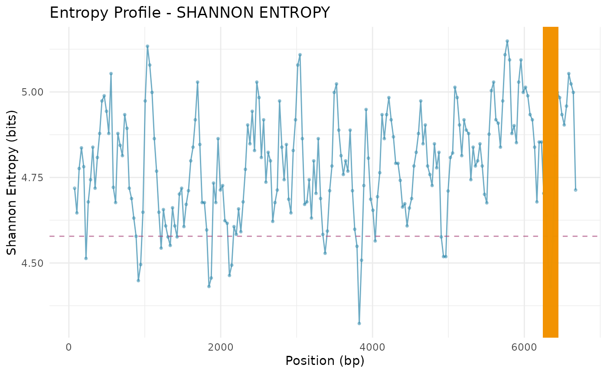

GeneScout on APOE and chr19
Dany Mukesha
2026-01-21
Source:vignettes/GeneScout_on_APOE-and-chr19.Rmd
GeneScout_on_APOE-and-chr19.RmdAbstract
Demonstration of GeneScout to identify hidden
small open reading frames (ORFs) in human genomic sequences using
data from chromosome 19 and APOE gene.
Introduction
Many genomes studied in detail still contain regions of DNA once
thought to be “non-coding”, but some of these regions may actually hide
small genes. GeneScout uses codon usage
statistics and entropy analysis to identify
these hidden genes by analyzing patterns in how DNA codes for proteins
and measuring sequence complexity.
Here we demonstrate it using:
- APOE gene as a known coding reference.
-
Chromosome 19 segments (
chr19) as the genome to scan.
Load Data
chr19 <- GeneScout::read_fasta("../data/chr19.fasta")
apoe_sequence <- GeneScout::read_fasta("../data/APOE.fasta")[1]
# chr19: DNAStringSet with multiple segments
# apoe_sequence: DNAStringSet containing APOE
chr19_seq <- chr19[[460]] # take 460 segment for demonstration
apoe_seq <- apoe_sequence[[1]] # APOE gene sequenceCodon Frequency and Shannon Entropy
# Calculate codon frequencies for APOE
apoe_codon_freq <- calculate_codon_frequencies(apoe_seq)
print(head(apoe_codon_freq[apoe_codon_freq > 0]))## AAA CAA GAA TAA ACA CCA
## 0.020260492 0.010130246 0.017366136 0.007235890 0.008683068 0.024602026
# Shannon entropy of APOE sequence
apoe_entropy <- calculate_shannon_entropy(apoe_codon_freq)
paste("APOE Shannon Entropy:", round(apoe_entropy, 3), "bits")## [1] "APOE Shannon Entropy: 5.624 bits"Create Reference Profile
# Using APOE as the reference gene for codon usage
ref_profile <- create_reference_profile(list(apoe_seq), method = "mean")
print(head(ref_profile[ref_profile > 0]))## AAA CAA GAA TAA ACA CCA
## 0.020260492 0.010130246 0.017366136 0.007235890 0.008683068 0.024602026Sliding Window Scan of chr19
We scan the full segment of chr19 (safe coordinates):
chr19_region <- subseq(chr19_seq, start = 1, end = length(chr19_seq))Sliding window scan
scan_result <- sliding_window_scan(
chr19_region,
window_size = 150,
step_size = 30,
reference_profile = ref_profile
)
# Inspect first few rows
head(scan_result)## GeneScout Sliding Window Scan Results
## =======================================
## Number of windows: 6
## Sequence range: 1 - 300 bp
##
## Entropy Statistics:
## Mean Shannon Entropy: 4.712 bits
## Std. Dev. Shannon Entropy: 0.117 bits
## Min Shannon Entropy: 4.513 bits
## Max Shannon Entropy: 4.837 bits
##
## KL Divergence Statistics:
## Mean KL Divergence: 1.397
## Std. Dev. KL Divergence: 0.149Detect Low-Entropy Peaks
peaks <- entropy_peak_detection(
scan_result,
metric = "shannon_entropy",
method = "quantile",
threshold = 0.1,
min_peak_width = 3
)
peaks## peak_id start_window end_window num_windows start_bp end_bp metric_value_mean
## 1 1 28 30 3 811 1020 4.507292
## 2 2 125 127 3 3721 3930 4.459936
## 3 3 162 164 3 4831 5040 4.537767
## 4 4 209 211 3 6241 6450 4.494005
## metric_value_min
## 1 4.448367
## 2 4.323074
## 3 4.518563
## 4 4.431272Candidate ORFs within Low-Entropy Peaks
candidates <- find_candidate_orfs(
chr19_region,
scan_result,
peaks,
min_orf_length = 60,
start_codons = c("ATG"),
stop_codons = c("TAA", "TAG", "TGA")
)
candidates## start end length
## 1 821 1020 200
## 2 838 933 96
## 3 870 1020 151
## 4 874 933 60
## 5 898 984 87
## 6 923 1015 93
## 7 961 1020 60
## 8 3772 3840 69
## 9 3850 3930 81
## 10 4860 4979 120
## 11 4899 4979 81
## 12 6252 6350 99
## 13 6275 6343 69
## 14 6297 6428 132
## sequence
## 1 ATGACTTACTAGCTATAATGAATCTTTTCTTAGATCCCCAACTTGGAAAATGAATGACCAGGTTAATATACTCCTGAATGTTGGTTTTAGAATTAGATTTGCATGGTTTTAAAATAGTTTTTCTTAATTGCACATTAAAAATGTGTATATTAACATTAACTGATTTATCTGGTTGTACAGATGCTATTAACTGAGTACTT
## 2 ATGAATCTTTTCTTAGATCCCCAACTTGGAAAATGAATGACCAGGTTAATATACTCCTGAATGTTGGTTTTAGAATTAGATTTGCATGGTTTTAAA
## 3 ATGAATGACCAGGTTAATATACTCCTGAATGTTGGTTTTAGAATTAGATTTGCATGGTTTTAAAATAGTTTTTCTTAATTGCACATTAAAAATGTGTATATTAACATTAACTGATTTATCTGGTTGTACAGATGCTATTAACTGAGTACTT
## 4 ATGACCAGGTTAATATACTCCTGAATGTTGGTTTTAGAATTAGATTTGCATGGTTTTAAA
## 5 ATGTTGGTTTTAGAATTAGATTTGCATGGTTTTAAAATAGTTTTTCTTAATTGCACATTAAAAATGTGTATATTAACATTAACTGAT
## 6 ATGGTTTTAAAATAGTTTTTCTTAATTGCACATTAAAAATGTGTATATTAACATTAACTGATTTATCTGGTTGTACAGATGCTATTAACTGAG
## 7 ATGTGTATATTAACATTAACTGATTTATCTGGTTGTACAGATGCTATTAACTGAGTACTT
## 8 ATGCGCCTAAGCAGGCCCTTTTCTTTTCTTTTTTTTTTTTTCTTTTCTCTATTTCTAGCTCAATTTAAC
## 9 ATGGAATCATTGCAGAAAACAGGCTTTAGGGTTTAAAGTTCATGCTCTCAACCATCACCGCTGACTTTCAACCTCAGTCAG
## 10 ATGGGATCTCTTATCACATCAAAGGATTTACTGTTTGATATGTCATAATTTTATCTGTTTTTTTTCTTACTTGCACGTTTATCTTAAGACTGATTTGTTTTTGTTATTTCTTTTTGTAGT
## 11 ATGTCATAATTTTATCTGTTTTTTTTCTTACTTGCACGTTTATCTTAAGACTGATTTGTTTTTGTTATTTCTTTTTGTAGT
## 12 ATGTTATAATCAATATAACTGTGATGAACAGGCTATTTGATACCCATGTATAGTTACCAAAGAGTTGTAAGCTGAAGAAGAAAATATTTAGAAAATAAA
## 13 ATGAACAGGCTATTTGATACCCATGTATAGTTACCAAAGAGTTGTAAGCTGAAGAAGAAAATATTTAGA
## 14 ATGTATAGTTACCAAAGAGTTGTAAGCTGAAGAAGAAAATATTTAGAAAATAAATTAAATATAAATAAATATATTAGACTGATAACATTTCCTTCTGTGACAAAAAGATGCTGATCATGTAAATGTAATGAG
## has_stop_codon frame peak_id entropy_score
## 1 FALSE 2 1 4.448367
## 2 TRUE 1 1 4.448367
## 3 FALSE 3 1 4.448367
## 4 TRUE 1 1 4.448367
## 5 TRUE 1 1 4.448367
## 6 TRUE 2 1 4.448367
## 7 FALSE 1 1 4.448367
## 8 TRUE 1 2 4.323074
## 9 FALSE 1 2 4.323074
## 10 TRUE 3 3 4.518563
## 11 TRUE 3 3 4.518563
## 12 TRUE 3 4 4.431272
## 13 TRUE 2 4 4.431272
## 14 TRUE 3 4 4.431272Visualizations
Entropy Profile
plot_entropy_profile(
scan_result,
metric = "shannon_entropy",
highlight_threshold = TRUE
)
Peaks Highlighted
plot_entropy_profile(
scan_result,
peaks = peaks,
metric = "shannon_entropy",
show_peaks = TRUE
)